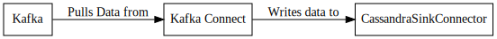

Cassandra Sink Connector¶
The Cassandra Sink connector is used to write data to a Cassandra Cluster. This connector works by utilizing the Batch functionality to write all of the records in each poll in a single batch.
Important
This connector can be configured to manage the schema on the Cassandra cluster. When altering an existing table the key is ignored. This is due to the potential issues changing a primary key on an existing table. The key schema is used to generate a primary key for the table when it is newly created. These fields must be in the value schema as well. Data written to the table is always read from the value from Kafka. This connector uses the topic to determine the name of the table to write to. This can be changed on the fly by using a transform to change the topic name.
Tip
If you encounter error messages like this Batch for [test.twitter] is of size 127.661KiB, exceeding specified threshold of 50.000KiB by 77.661KiB. or warning messages like Batch for [test.twitter] is of size 25.885KiB, exceeding specified threshold of 5.000KiB by 20.885KiB. Try adjusting the consumer.max.poll.records setting in the worker.properties for Kafka Connect.
Note
This connector uses the topic to determine the name of the table to write to. This can be changed on the fly by using a transform like Regex Router to change the topic name.
Configuration¶
cassandra.keyspace.create.enabled¶
Importance: High
Type: Boolean
Default Value: true
Flag to determine if the keyspace should be created if it does not exist.
cassandra.compression¶
Importance: Medium
Type: String
Default Value: NONE
Validator: [NONE, SNAPPY, LZ4]
Compression algorithm to use when connecting to Cassandra.
cassandra.consistency.level¶
Importance: Medium
Type: String
Default Value: LOCAL_QUORUM
Validator: ValidEnum{enum=ConsistencyLevel, allowed=[ANY, ONE, TWO, THREE, QUORUM, ALL, LOCAL_QUORUM, EACH_QUORUM, SERIAL, LOCAL_SERIAL, LOCAL_ONE]}
The requested consistency level to use when writing to Cassandra.
cassandra.contact.points¶
Importance: Medium
Type: List
Default Value: [localhost]
The hosts to connect to.
cassandra.deletes.enabled¶
Importance: Medium
Type: Boolean
Default Value: true
Flag to determine if the connector should process deletes.
cassandra.password¶
Importance: Medium
Type: Password
Default Value: [hidden]
The password to connect to Cassandra with.
cassandra.port¶
Importance: Medium
Type: Int
Default Value: 9042
Validator: ValidPort{start=1025, end=65535}
The port the Cassandra hosts are listening on.
cassandra.security.enabled¶
Importance: Medium
Type: Boolean
Default Value: false
Flag to determine if security is enabled.
cassandra.ssl.enabled¶
Importance: Medium
Type: Boolean
Default Value: false
Flag to determine if SSL is enabled when connecting to Cassandra.
cassandra.ssl.provider¶
Importance: Medium
Type: String
Default Value: JDK
Validator: ValidEnum{enum=SslProvider, allowed=[JDK, OPENSSL, OPENSSL_REFCNT]}
The SSL Provider to use when connecting to Cassandra
cassandra.table.create.caching¶
Importance: Medium
Type: String
Default Value: NONE
Validator: ValidEnum{enum=Caching, allowed=[ALL, KEYS_ONLY, ROWS_ONLY, NONE]}
Caching setting to use.
cassandra.table.create.compression.algorithm¶
Importance: Medium
Type: String
Default Value: NONE
Validator: [NONE, SNAPPY, LZ4, DEFLATE]
Compression algorithm to use when the table is created.
cassandra.table.create.compression.enabled¶
Importance: Medium
Type: Boolean
Default Value: true
Flag to determine if compression should be used when a table is created. Existing tables are not altered.
cassandra.table.manage.enabled¶
Importance: Medium
Type: Boolean
Default Value: true
Flag to determine if the connector should manage the table.
cassandra.username¶
Importance: Medium
Type: String
Default Value: cassandra
The username to connect to Cassandra with.
cassandra.write.mode¶
Importance: Medium
Type: String
Default Value: Insert
Validator: ValidEnum{enum=WriteMode, allowed=[Insert, Update]}
The type of statement to build when writing to Cassandra.
Examples¶
Property based example¶
This configuration is used typically along with standalone mode.
name=CassandraSinkConnector1
connector.class=com.github.jcustenborder.kafka.connect.cassandra.CassandraSinkConnector
tasks.max=1
topics=< Required Configuration >
cassandra.keyspace=< Required Configuration >
Rest based example¶
This configuration is used typically along with distributed mode. Write the following json to connector.json, configure all of the required values, and use the command below to post the configuration to one the distributed connect worker(s). Check here for more information about the Kafka Connect REST Interface.
{
"config" : {
"name" : "CassandraSinkConnector1",
"connector.class" : "com.github.jcustenborder.kafka.connect.cassandra.CassandraSinkConnector",
"tasks.max" : "1",
"topics" : "< Required Configuration >",
"cassandra.keyspace" : "< Required Configuration >"
}
}
Use curl to post the configuration to one of the Kafka Connect Workers. Change http://localhost:8083/ the the endpoint of one of your Kafka Connect worker(s).
curl -s -X POST -H 'Content-Type: application/json' --data @connector.json http://localhost:8083/connectors
curl -s -X PUT -H 'Content-Type: application/json' --data @connector.json http://localhost:8083/connectors/CassandraSinkConnector1/config